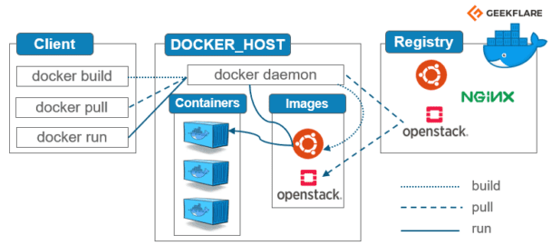

¿Qué es un contenedor?
Docker es una plataforma de software que permite crear, desplegar y ejecutar aplicaciones de forma rápida y consistente utilizando contenedores. Imagina un contenedor de carga: puedes meter diferentes tipos de mercancías dentro, y siempre se transportará de la misma manera, independientemente del camión o barco que lo lleve. De manera similar, un contenedor Docker empaqueta todo lo que una aplicación necesita para ejecutarse (código, librerías, dependencias, configuración, etc.) en un solo paquete aislado.
Otro ejemplo; imagina que quieres llevar tu cocina completa a otro lugar para preparar tu receta favorita; es imposible con una cocina real, pero Docker lo hace posible con aplicaciones.
Hay 3 componentes principales en docker:
- Dockerfile: Es un archivo de texto que contiene todas las instrucciones necesarias para construir una imagen Docker, velo como la receta de un pastel.
- Imagen: Una plantilla lista para usar pero que no está en funcionamiento todavía. Es como el molde del pastel, ya esta cocinado.
- Contenedor: Es tu aplicación en funcionamiento, creada a partir de una imagen. El pastel esta servido listo para comer

¿Qué es Kubernetes?
Es para manejar varios dockers(contenedores) para apps mucho más grandes o robustas.
No son tecnologías que se contraponen, son complementarias, Kubernetes es el barco que carga todos los contenedores.

Cuando usar Docker o Kubernetes
| # | Docker | Kubernetes |
|---|---|---|
| 1 | Desarrollo local | Aplicaciones complejas |
| 2 | Proyectos pequeños | Alta disponibilidad |
| 3 | Entornos de prueba | Escalado automático |
| 4 | Despliegues simples | Entornos de producción grandes |
Video relacionado:
Para mas infromación acerca de Docker y Kubernetes:
Google CloudAmazon Kubernetes
Kubernetes